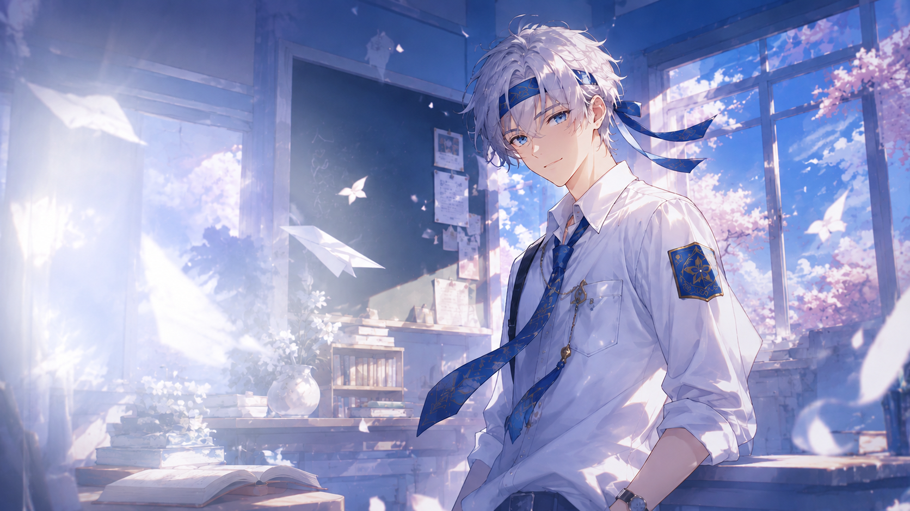

01 / PROGRAM KERJA
Kimi To
Nippon
Kegiatan orientasi menyambut anggota baru untuk mengenal lebih dekat keluarga besar MIRAI NO HANA Nihongo Kurabu.
KIMI TO NIPPON
Gerbang awal perjalanan di Mirai No Hana.
KTN adalah kegiatan orientasi untuk mengenal lebih dalam tentang Mirai No Hana Nihongo Kurabu. Rangkaian acaranya meliputi pengenalan sejarah, tujuan, makna, program kerja, dan perkenalan pengurus. Selain materi, KTN juga dipenuhi aktivitas seru, games interaktif, dan sesi bincang-bincang inspiratif bersama alumni atau bintang tamu spesial.
Lewat Kimi To Nippon, seluruh anggota baru disambut dengan hangat sebagai keluarga tanpa adanya rasa sungkan ataupun senioritas, menciptakan pondasi kebersamaan yang kokoh untuk bertumbuh bersama.
BAGAIMANA KEGIATANNYA?
Rangkaian acara orientasi seru.
Kenal Sejarah & Visi Misi
Mengenal latar belakang berdirinya klub, filosofi nama Mirai No Hana, serta arah tujuan yang ingin dicapai bersama.
Perkenalan Pengurus & Proker
Mengenal struktur divisi, para pengurus, serta agenda program kerja seru yang akan diadakan selama satu periode kepengurusan.
Ice Breaking & Games Interaktif
Aktivitas permainan kelompok dan kuis budaya Jepang yang meriah untuk mencairkan suasana dan mempererat pertemanan.
Bincang Inspiratif Bareng Tamu Spesial
Sesi bincang-bincang santai dan tanya jawab bersama alumni berprestasi atau pegiat bahasa Jepang untuk membagikan wawasan berharga.
BENEFIT
Apa yang kamu dapatkan?
Pemahaman Komprehensif
Memahami budaya organisasi, nilai-nilai, serta ekosistem belajar di Mirai No Hana sejak hari pertama.
Sahabat & Tongkrongan Baru
Membangun relasi akrab dengan teman seangkatan maupun senior dalam suasana kekeluargaan yang egaliter.
Inspirasi & Motivasi
Mendapat insight berharga tentang prospek dan keseruan mendalami bahasa serta budaya Jepang dari para alumni.
Ruang Tumbuh yang Aman
Merasa diterima di lingkungan yang suportif untuk mengekspresikan minat tanpa takut dihakimi.
DOKUMENTASI
Momen kebersamaan KTN.
Keseruan kegiatan orientasi Kimi To Nippon yang penuh canda tawa dan kehangatan.
